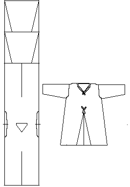

This garment, which resembles greatly the cote designs discussed elsewhere, is of white linen. It is meant to be worn under a woolen cotes. It is housed in Notre Dame, Paris. It is a relic attributed to King Louis IX of France (1214-1270), and is said to be the oldest extant undergarment. It should be noted that this description is an estimate on Burnham's part, since it "was not possible to make a proper examination."
Return to Contents or Misc. French Sites
Some Clothing of the Middle Ages - Shirts - St. Louis, by I. Marc Carlson, Copyright 1996 This code is given for the free exchange of information, provided the Author's Name is included in all future revisions, and no money change hands-